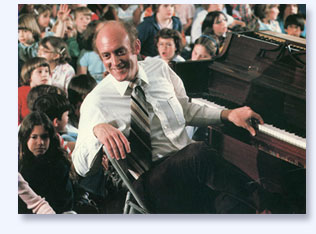
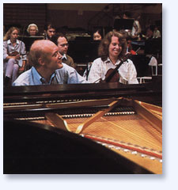
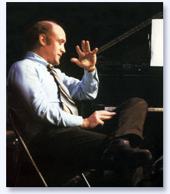

|
Renowned as an inspired
lecturer and teacher, Lorin Hollander is one of our
most eloquent and influential artists and philosophers.
Organizations such as the National Endowment of the
Arts, American Symphony Orchestra League, National Association
for Music Education, the US Department of Education
among others have chosen Hollander to articulate their
objectives and visions not only because of his unique
ability as a fundraiser, but also as one who is able
to instill an appreciation and understanding for the
importance of the arts and arts education in our lives.
“We are living in a time where the myriad devastating
crises facing the planet call for nothing less than
a planetary transformation in consciousness –
one that many believe is already underway. The burning
question is how we might awaken an experience of our
world and each other which is ethical, non-exploitative,
compassionate and mutually enhancing.”
|

|
For over 35 years, Lorin Hollander has dedicated himself
to addressing these issues by articulating the possibilities
for visionary and transformative education through music –
education which empowers all capacities and modalities of
human creative potential. We must learn to cultivate self-reflective,
loving and harmonious ways of being in young people, as those
of this rising generation must become visionary leaders and
global citizens of the new millennium.
In:
•
Lectures •
Keynote Speeches •
Teaching •
Mentoring •
Advising
•
University & Community Residencies •
Workshops •
Professional Development Seminars
Lorin Hollander explores how music has a vital role in addressing
these most urgent issues of our time through its unique abilities
to empower visionary creativity and harmonious ways of being,
while reflecting the underlying vibratory causative principles
of all formation in nature.
With his depth of knowledge and mastery of diverse subjects,
Hollander has been called upon to advise such organizations
as the Commission On Presidential Scholars, the World Congress
on the Gifted and the International Federation of Music Therapy.
He served on the Rockefeller Panel – “Arts, Education
and Americans,” and has pioneered in lifelong learning,
spiritual consciousness and human potential communities. He
is also a Fellow of the Joseph
Campbell Foundation.
|  |
Lorin Hollander has been appointed the Artistic Advisor
and Development Consultant to the New England Conservatory
Research Center for Learning Through Music and the Music-in-Education
National Consortium (MIENC). The Music-in-Education
National Consortium represents a network of universities
and arts organizations including the Boston Symphony Orchestra,
New England Conservatory, Chicago Arts Partnerships in
Education, Florida Atlantic University, Georgia State
University, Metropolitan Opera Guild, and the University
of North Carolina at Greensboro – whose purpose
is to bring about an evolution of music teaching and learning.
|
| As Artistic Advisor, Hollander helps guide the development
of cross-disciplinary and research-based educational programs
illuminating the evolving role of music, musicians and
mentors in public schools and community-wide initiatives.
Lorin Hollander’s particular vision of how music
when taught by enlightened mentors will further the health,
intellectual capacity, and social responsibility of our
schools, businesses, healing, and social agencies offers
our greatest hope for the future of our society. |
"Lorin’s vision for
the scope of music’s essential role in education
and society is profoundly important – an inspiration
to us all."
- Larry Scripp,
Director,
Music-in-Education National Consortium & New
England Conservatory Research Center |
|
|  |
“I am committed to nurturing
the self-expression and creativity of all people and to
encouraging their lifelong contribution as creative artists,
scientists, mentors, visionaries, and seekers of spiritual
truth.” |
|